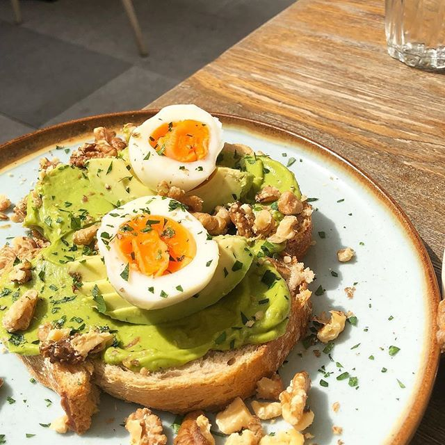

A fire broke out at the landmark Notre Dame Cathedral in central Paris, potentially involving renovation works being carried out at the site, the fire service said.
Images posted on social media showed flames and huge clouds of smoke billowing above the roof of the Gothic cathedral, the most-visited historic monument in Europe.
Health
health benefits of avocado
Avocados are a stone fruit with a creamy texture that grow in warm climates. Their health benefits include improving digestion, and protection against cancer.
Also known as an alligator pear or butter fruit, the versatile avocado is the only fruit that provides a substantial amount of healthy monounsaturated fatty acids (MUFA). Avocados are a naturally nutrient-dense food and contain nearly 20 vitamins and minerals.
#LazySunday
Things you need for a cosy night in
Sometimes after work or a day out in the cold, all you want to do is jump into a winter holiday advert
You can’t have a cozy night in without being super comfortable. Grab a few large cushions to arrange around you, lay back and relax into them (with your hot chocolate and tv remote in hand – you don’t want to get up after you’ve squished down!). You’re never too old to make a fort either.Sometimes we need to get away from the screens we spend so much of our time looking at and indulge in something with real pages. Grab a couple of magazines on your way home from work, or have a rummage for that new book you bought so long ago it probably can’t be described as new anymore.